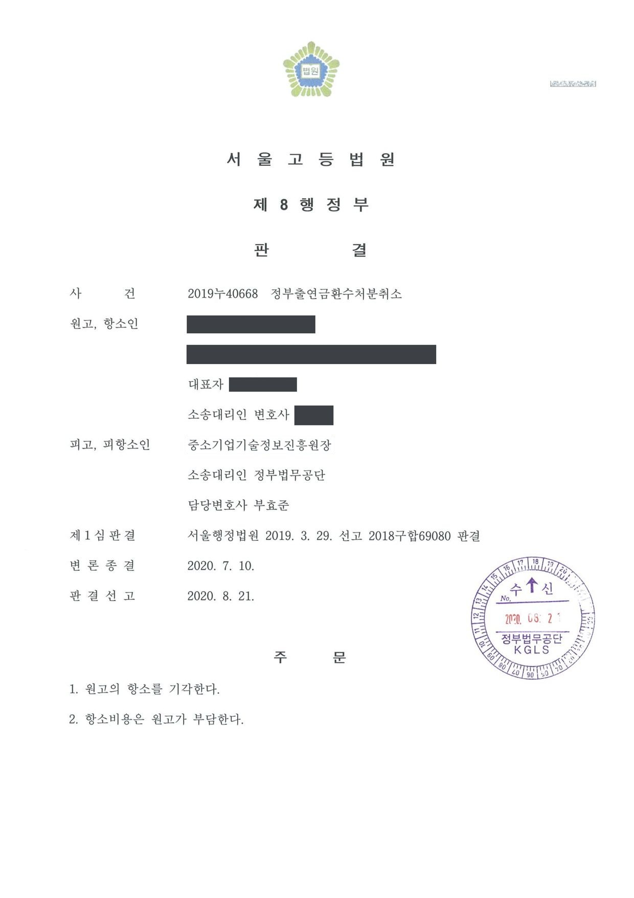

대학 산학협력단에 대한 국가연구개발사업 정부출연금 환수처분 취소소송 (1·2심)
서울행정법원 2018구합69080 · 서울고등법원 2019누40668 · 담당변호사 부효준
판결문


사건의 요지
산학연협력 기술개발사업의 참여기관인 대학 산학협력단에 대한 출연금 환수처분에 관하여, 이의신청에 따른 재통보의 처분성과 환수 사유의 존재 여부가 다투어진 사건입니다.
주제별 사례연구개발비·출연금 환수처분
사건의 주요 내용
원고인 대학 산학협력단은 2015년도 산학연협력 기술개발사업의 연구마을 과제에 참여기관(연구마을을 운영하는 대학 측)으로 참여하여, 입주기업인 한 중소기업과 함께 '실감형 미디어(홀로그램·손동작 인식)를 활용한 의생명 분야 연구·교육 도구 개발 과제'를 수행하기로 하고, 2015년 12월 당시의 전문기관과 협약기간 12개월(2015년 12월부터 2016년 11월까지), 정부지원금 약 8,115만 원의 협약을 체결하였습니다.
2016년 11월 최종보고서가 제출되었으나 최종평가위원회는 2017년 1월 과제를 '실패'로 판정하였고, 이의신청에 따른 재평가와 2017년 3월의 성실성검증위원회 평가도 모두 '실패'였습니다. 전문기관은 2017년 12월 '연구개발과정을 불성실하게 수행하여 그 결과가 극히 불량한 경우'에 해당한다는 이유로 정부출연금 81,124,551원을 2018년 1월까지 환수한다고 통보하였고(최초처분), 원고가 7일 안에 이의신청을 하자 2018년 3월 전문위원회 심의를 거쳐 같은 금액을 2018년 4월까지 다른 계좌로 납부하라고 다시 통보하였습니다(이 사건 처분).
원고가 이 사건 처분의 취소를 구한 행정심판은 '최초처분에 변동이 없음을 안내한 것에 불과하다'는 이유로 각하되었습니다. 원고는 주위적으로 2018년 3월의 이 사건 처분, 예비적으로 2017년 12월의 최초처분의 취소를 구하는 소송을 제기하였고, 부효준 변호사는 전문기관을 대리하였습니다. 1심은 2019년 3월 주위적 청구를 받아들이지 않고 예비적 청구 부분의 소를 각하하였으며, 항소심은 2020년 8월 원고의 항소를 받아들이지 않았습니다.
쟁점
- 이의신청에 대하여 납부기한과 입금계좌를 바꾸어 다시 환수를 통보한 것이 최초처분과 별개로 항고소송의 대상이 되는 새로운 처분인지
- 사업계획서에 증빙방법으로 적은 소관 부처 성능인증을 협약기간 안에 받지 못한 것이 '연구개발과정을 불성실하게 수행하여 그 결과가 극히 불량한 경우'에 해당하는지
- 평가가 모두 끝난 뒤 받은 외부 연구기관 시험성적서와 저작권 등록·기술자료 임치 등 사후 성과를 고려하여야 하는지, 전액 환수가 비례원칙에 어긋나는지
원고의 주장
- 과제 결과물에 관하여 소관 부처의 성능인증은 받지 못하였지만 외부 전문가의 시험테스트와 외부 연구기관의 시험성적서로 결과가 증명되므로 결과가 극히 불량하다고 볼 수 없고, 입주기업과의 지속적인 기술상담과 연구노트 작성 등으로 과제를 성실히 수행하였다고 주장하였습니다.
- 성능인증을 받지 못한 것은 인증 절차의 대기 기간이 길어 협약기간 안에 받기 어려웠기 때문이지 기술적 요인 때문이 아니며, 출연금을 부당하게 사용하거나 횡령하지 않았는데도 전액을 환수하는 것은 지나치게 가혹하여 비례원칙에 어긋난다고 주장하였습니다.
부효준 변호사의 주장
- 최초처분만이 행정소송의 대상이 되는 처분이고, 이의신청 뒤의 재통보는 종전 처분을 그대로 유지함을 전제로 그 내용 일부를 바꾸어 업무처리의 적정과 원고의 편의를 도모한 조치에 불과하므로 주위적 청구 부분은 부적법하다고 본안전항변을 하였습니다. 납부기한이 바뀐 것은 처분의 본질적 내용과 무관한 부수적 사항이라는 점도 덧붙였습니다.
- 본안에서는 연구비 환수를 위한 판단이 과학기술적으로 고도의 전문성을 요하여 전문기관의 재량판단이 최대한 존중되어야 하고, 원고가 최종보고서에 과제 완수에 관한 객관적 증빙을 전혀 첨부하지 않았으며, 처분으로 확보되는 공익이 우월하므로 재량권 일탈·남용이 없다고 주장하였습니다.
법원의 판단
1심과 항소심은 모두 본안전항변을 받아들이지 않았습니다. 재통보로 납부기한이 2018년 1월에서 4월로 연기되고 입금계좌가 바뀌어 환수 법률관계에 변동이 생겼고(민법 제153조의 기한의 이익), 전문기관이 별도의 전문위원회를 열어 처분사유와 양정을 다시 심사한 뒤 최초처분과 같은 형식으로 금액과 납부기한을 다시 정하였으며, 통보서에 행정심판·행정소송을 제기할 수 있다고 적었다는 점을 들어 재통보를 새로운 처분으로 보았습니다. 그 결과 최초처분은 소급하여 실효되었으므로 그 취소를 구하는 예비적 청구는 소의 이익이 없다고 보아 각하하였고, 항소심은 원고가 이의신청을 한 2017년 12월에는 최초처분을 알았다고 보아야 하는데 그 청구가 2019년 1월에야 추가되었으므로 제소기간도 지났다고 덧붙였습니다.
본안에서는, 원고가 사업신청서의 '측정결과의 증빙방법'란에 소관 부처 성능인증 신청을 스스로 적었으므로 성능인증이나 이에 준하는 공인 성능평가 자료로 결과를 증명해야 했는데, 협약기간 종료가 임박한 2016년 10월에야 인증 요건을 문의하기 시작하였고 최종보고서에 아무런 객관적 증빙을 붙이지 않았으며, 협약 제8조에 따른 협약기간 연장 등도 논의하지 않았다는 점에서 불성실 수행에 해당한다고 보았습니다. 114쪽에 이르는 연구노트도 목표·연구방법·도출결과가 추상적이어서 1년간 약 8,100만 원으로 수행된 연구의 기록으로는 미흡하다고 하였습니다.
평가가 끝난 뒤 받은 외부 연구기관 시험성적서는 공인된 성능평가 자료가 아니고 최종평가 이후 제출된 자료를 전문위원회가 고려하는 것은 허용되지 않으며, 저작권 등록·기술자료 임치·컨설팅 매출도 협약기간 종료 후의 사후 성과에 불과하다고 보았습니다. 성과물은 여전히 원고의 소유로 남는다는 점 등을 들어 전액 환수도 비례원칙에 어긋나지 않는다고 하여 주위적 청구를 받아들이지 않았고, 항소심도 같은 결론으로 항소를 받아들이지 않았습니다. 같은 과제의 입주기업과 그 임원들이 제기한 별도의 소송(서울행정법원 2018구합67091, 서울고등법원 2019누43209)도 받아들여지지 않아 확정되었습니다.
그러나 환수금 납부의무에 관하여 납부기한이 부여된 경우에는 그 납부기한이 위 납부의무의 이행기가 되므로, 위 환수금을 납부할 의무가 있는 자는 그 기한의 이익을 누릴 수 있는 것인데(민법 제153조 참조), 이 사건 처분으로 납부기한이 2018. 1. 20.에서 2018. 4. 26.로 연기됨으로써 원고로서는 위 2018. 4. 26.까지 기한의 이익을 누릴 수 있게 되었는바, 위와 같은 납부기한의 변경은 원고에 대한 정부출연금 환수의 법률관계에 변동을 초래한 것으로 볼 수 있다. 피고의 위 주장은 받아들일 수 없다.
서울고등법원 2019누40668 판결 이유 '2. 나. 피고의 본안전 항변에 관한 판단 — 2)' 부분
설령 위 성능인증 결과를 획득할 수 없는 제반 사정이 있었고 이를 협약체결 당시나 이 사건 과제 진행 중에 전혀 예상하지 못했다고 하더라도 최소한 원고로서는 그러한 상황을 협약기간 종료 전에 피고에게 밝히고 이 사건 협약 제8조에 따른 협약기간의 연장 가능성 타진 등 향후 이 사건 과제의 진행에 관하여 논의를 하여야 했음에도 그러한 조치를 전혀 취하지 않았다. 이러한 사정들에 비추어 이 사건 과제는 불성실하게 수행된 것으로 볼 수밖에 없다.
서울고등법원 2019누40668 판결 이유 '2. 다. 2) 처분사유 존부 — 다) 구체적 판단 ③' 부분
또한 이 사건 과제의 실패 여부의 판단자료가 되는 것은 어디까지나 최종평가 시까지 제출된 최종보고서 및 증빙자료이고(이 사건 운영요령 제23조 제2항), 실패 여부에 관한 판단이 종료된 이후에 출연금 환수 및 참여제한 여부를 결정하는 전문위원회가 최종평가 이후에 제출된 자료를 고려하는 것은 정해진 기간 내에 과제의 완수 여부를 확인하도록 하고 있는 관련 법령의 태도에 비추어 허용되지 않는다고 봄이 타당하다. 즉, 원고가 이 사건 과제에서 연구한 결과를 바탕으로 이 사건 과제 이후에 새로운 인증을 받았다 하더라도, 그러한 사후적인 결과가 이 사건 과제에 대한 평가 당시로 소급하여 기존의 평가를 뒤집을 수 있다고 볼 수는 없다.
서울고등법원 2019누40668 판결 이유 '2. 다. 2) 다) 구체적 판단 ⑤' 부분
※ 판결 이유 가운데 이 사건의 판단 기준이 된 부분을 그대로 옮긴 것으로, 당사자 이름 등은 가렸습니다.
이 사건이 보여 주는 것
이 사건에서 법원은 전문기관을 대리한 쪽의 본안전항변을 받아들이지 않고, 이의신청 뒤에 납부기한과 입금계좌를 바꾸어 다시 보낸 환수 통보를 새로운 처분으로 인정하였습니다. 같은 전문기관의 '이의신청 기각' 통보를 처분이 아니라고 본 다른 판결들과 달리, 전문위원회를 다시 열어 사유와 양정을 심사하고 처분서와 같은 형식으로 통보한 경우에는 그 통보 자체가 항고소송의 대상이 될 수 있다는 것입니다. 반면 최초처분은 그로써 실효되어 다툴 수 없게 되므로, 어느 통보를 대상으로 삼을지는 사안마다 신중하게 정해야 합니다.
본안에서는 사업계획서에 스스로 적어 둔 증빙방법(소관 부처 성능인증)이 그대로 평가 기준이 되었습니다. 인증 절차에 시간이 오래 걸린다면 협약기간이 끝나기 전에 전문기관에 사정을 알리고 협약 변경이나 기간 연장을 협의해 두어야 하며, 평가가 끝난 뒤에 받은 시험성적서나 저작권 등록·매출 같은 사후 성과로는 이미 내려진 평가를 뒤집기 어렵습니다. 연구노트도 분량보다 단계별 목표·방법·결과가 구체적으로 적혔는지가 성실성 판단의 자료가 됩니다.
비슷한 처분을 받으셨다면
국가연구개발 제재처분은 사전통지를 받은 날부터 20일 이내에 재검토 요청 의견을 내고, 처분이 있음을 안 날부터 90일 이내에 취소소송을 제기해야 합니다. 처분서나 사전통지서를 받은 날짜부터 확인해 드립니다.